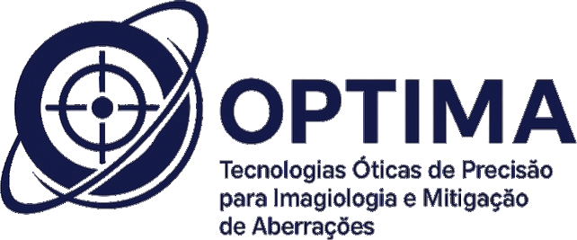
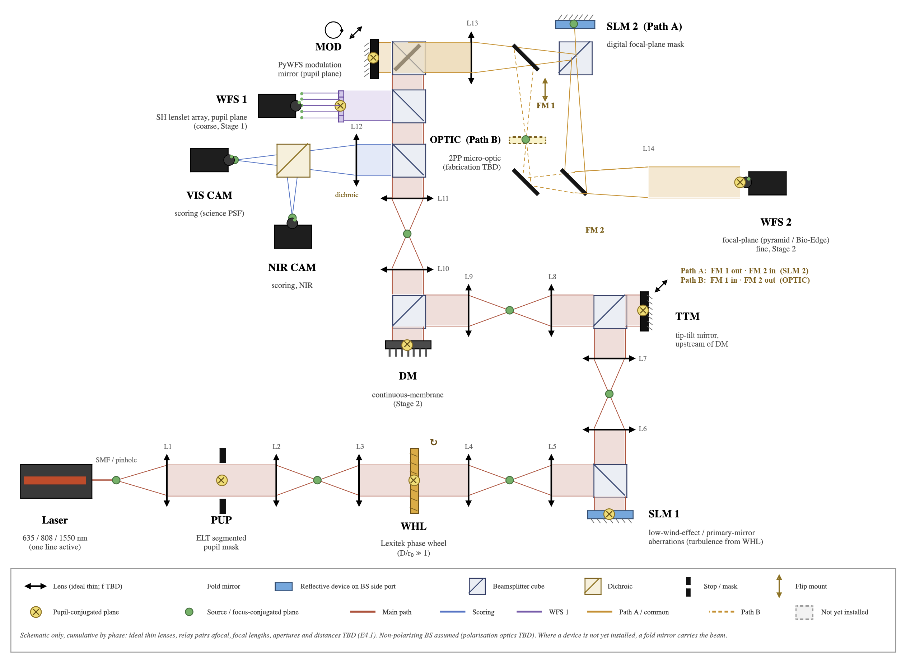
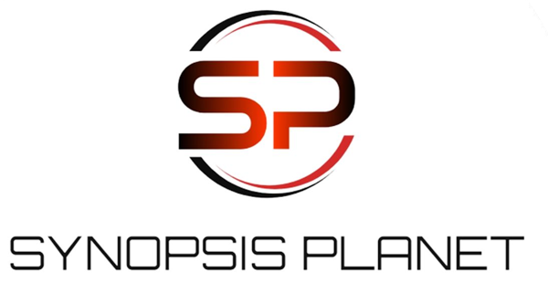
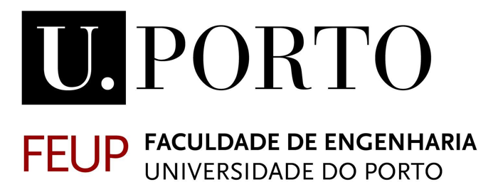
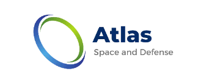

R&D co-promotion project · COMPETE 2030 · Big Science
Optical Precision Technology for Imaging and Mitigation of Aberrations — an adaptive-optics platform with hardware in the loop, to develop and validate novel wavefront sensors, multi-stage control and AI-based algorithms, for astronomy and free-space optical communications.
Tecnologias Óticas de Precisão para Imagiologia e Mitigação de Aberrações

Numerical simulation is essential for designing adaptive-optics systems, but it can only go so far. Self-optimising and machine-learning controllers, new wavefront sensors and multi-stage architectures need to be trained, tested and validated on real hardware before they are trusted on a telescope or a communications link.
OPTIMA brings together an aerospace engineering company, a university and a space-and-defence consultancy to build that hardware: a reconfigurable optical bench that reproduces realistic disturbances — atmospheric turbulence, segmented-pupil and low-wind-effect aberrations — and closes the loop with interchangeable wavefront sensors and correctors.
The platform is used to study:
A two-stage adaptive-optics bench, built up phase by phase. The configuration below (Phase 4) adds a flip-mount switch so that a digital focal-plane mask on a spatial light modulator (Path A) can be tested head to head against a custom physical micro-optic (Path B).


Consortium leader
Aerospace engineering company: space optics, optical and optomechanical design, thermal and mechanical simulation, and AI-aided systems.

Academic partner
Faculty of Engineering. Physics, adaptive optics, instrumentation and simulation; leads the experimental optical platform and new AI-based wavefront-control algorithms.

Industry partner
Technology consultancy and engineering services for the space and defence sectors.
Carlos M. Correia
FEUP PI
Fábio Gaspar
FEUP
Paulo Gordo
Synopsis Planet
David Seixas
Synopsis Planet
Ana Sousa
Synopsis Planet
Joel Puga
Atlas Space and Defense
Nuno Rodrigues
Atlas Space and Defense
PhD and MSc positions are opening on the project — see Work with me.
Papers, code and data from the project will be listed here as they appear.
Carlos M. Correia, FEUP PI — carlos.correia [at] fe.up.pt
Faculdade de Engenharia da Universidade do Porto, Rua Dr. Roberto Frias, 4200-465 Porto, Portugal
OPTIMA – Tecnologias Óticas de Precisão para Imagiologia e Mitigação de Aberrações, com a referência COMPETE2030-FEDER-03031000, n.º 25412, financiado pelo PITD – COMPETE 2030, através do FEDER. Projeto em copromoção no âmbito do SIID – I&D Empresarial (Roteiros Tecnológicos Big Science), gerido pela ANI – Agência Nacional de Inovação.